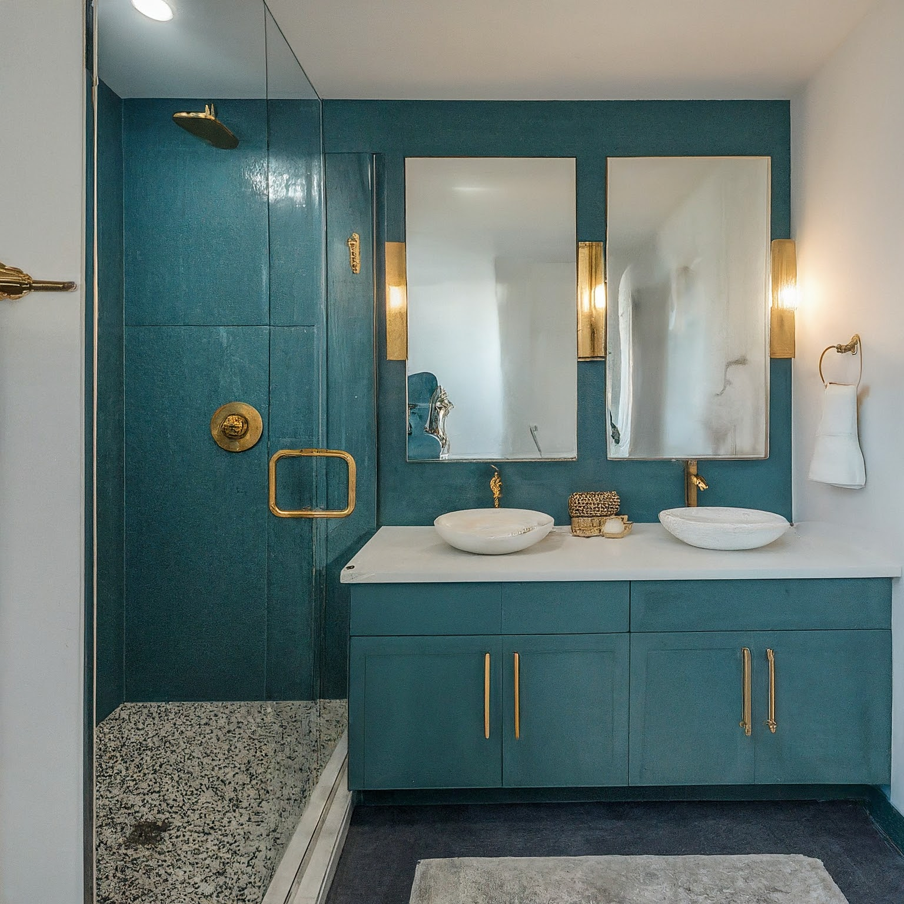

Guest Bathroom Interior Design Concept: Contemporary Teal & Gold

Guest Bathroom Interior Design Concept: Contemporary Teal & Gold
This design concept aims to create a sophisticated and inviting guest bathroom with a contemporary feel. The teal and gold color scheme provides a luxurious and calming atmosphere, while clean lines and modern fixtures ensure a sleek and stylish space. This bathroom should feel like a small oasis for guests, leaving a lasting impression.
1. Overall Concept and Style
Concept: A tranquil and refined space that blends contemporary aesthetics with a touch of opulence. The bathroom will be designed to maximize functionality and visual appeal, creating a comfortable and memorable experience for guests.
Style: Contemporary – Characterized by clean lines, minimalist design elements, and a focus on functionality. We will avoid overly ornate details and prioritize a streamlined, uncluttered look.
2. Color Scheme and Materials
Color Scheme:
- Dominant: Teal Blues - A sophisticated range, varying in saturation, from a deep, jewel-toned teal for the walls (or an accent wall) to a softer, more muted teal for accessories. This will set the overall mood and create a sense of depth.
- Accent: Gold - Used strategically to add warmth and luxury. Think brushed gold fixtures, mirror frames, and small decorative accents.
- Neutral: White/Off-White - Used for the vanity top, toilet, sink, and possibly the flooring (depending on material). This provides a clean backdrop and allows the teal and gold to stand out.
Materials:
- Walls: High-quality, moisture-resistant paint in the chosen teal hue(s). Consider a textured paint for an accent wall for added depth. Alternatively, a beautiful teal-toned tile.
- Flooring: Large-format porcelain tiles in a light grey or off-white color. Alternatively, a light wood-look tile could add warmth while maintaining a contemporary feel. Consider a subtle geometric pattern for added interest.
- Vanity Top: White quartz or marble-look quartz for a clean and durable surface.
- Fixtures: Brushed gold or matte gold finish for faucets, showerheads, towel bars, and toilet paper holders.
- Shower/Bath (if applicable): White subway tile with gold grout lines, or a larger format tile in a coordinating teal hue. Consider a niche for toiletries.
- Accessories: Materials such as glass, metal, and natural stone (soap dish, toothbrush holder, etc.) in complementary colors.
3. Furniture and Layout
Layout:
- Standard: Typical layout with toilet, vanity, and shower (if space allows). Optimize flow and ensure adequate space around each fixture.
- Space Optimization: Consider a wall-mounted toilet to free up floor space. A corner sink or vanity could also be a solution for smaller bathrooms.
Furniture:
- Vanity: A floating vanity with clean lines and a simple, modern design. Consider a dark wood vanity cabinet or a white cabinet with gold hardware. The vanity should have ample storage for guest essentials.
- Mirror: A large, rectangular mirror with a brushed gold frame. Consider an integrated LED mirror for optimal lighting.
- Toilet: A sleek, contemporary toilet with a dual-flush system for water conservation.
- Shower/Bath (if applicable): A glass shower enclosure with minimal framing. A freestanding soaking tub could be added if space permits.
- Storage: Wall-mounted shelves or a narrow cabinet for extra towels and toiletries.
4. Lighting Design
Overall Goal: To create a well-lit and inviting space with a combination of ambient, task, and accent lighting.
- Ambient Lighting: Recessed LED downlights for general illumination. Dimmable for adjusting the mood.
- Task Lighting: Vanity lighting placed on either side of the mirror or integrated within the mirror itself. Choose fixtures that provide even and flattering light for grooming.
- Accent Lighting: A decorative pendant light above the vanity or sconces on either side of the mirror to add a touch of elegance. Consider uplighting under the vanity to create a floating effect.
- Lighting Color Temperature: Opt for warm white (2700K-3000K) LED bulbs to create a cozy and inviting atmosphere.
5. Decorative Elements
Key: Less is more. Focus on quality over quantity.
- Artwork: A single piece of abstract art or a photograph with teal and gold accents.
- Plants: A small succulent or air plant on the vanity to add a touch of life.
- Towels: High-quality, plush towels in varying shades of teal and white, neatly folded and displayed on a towel rack.
- Accessories: A decorative soap dispenser, toothbrush holder, and tray in gold or complementary colors.
- Hardware: Consistent hardware (cabinet pulls, toilet paper holder, towel bars) in a brushed gold finish.
- Rug: A small, plush rug in a neutral color or a subtle geometric pattern.
6. Practical Considerations
- Ventilation: Ensure adequate ventilation to prevent moisture buildup and mold growth. Install a quiet and efficient exhaust fan.
- Accessibility: Consider accessibility for guests with mobility limitations.
- Cleaning: Choose materials that are easy to clean and maintain.
- Storage: Provide ample storage for guest essentials, such as towels, toiletries, and extra toilet paper.
- Safety: Install grab bars in the shower or bath area if necessary. Ensure adequate lighting to prevent falls.
- Durability: Select durable materials that can withstand daily use and moisture.
- Budget: Establish a budget and stick to it. Prioritize essential items and make compromises on less important features if necessary.
- Guest Comfort: Consider providing amenities such as a magnifying mirror, hair dryer, and extra toiletries.
This comprehensive design plan provides a framework for creating a beautiful and functional guest bathroom that embodies contemporary style with a sophisticated teal and gold color palette. By carefully considering each element, you can create a space that will impress your guests and enhance their overall experience.